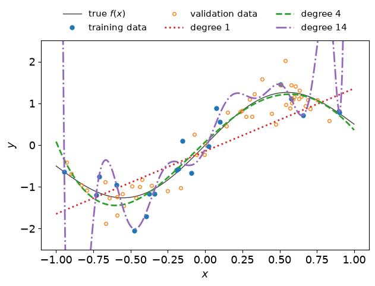
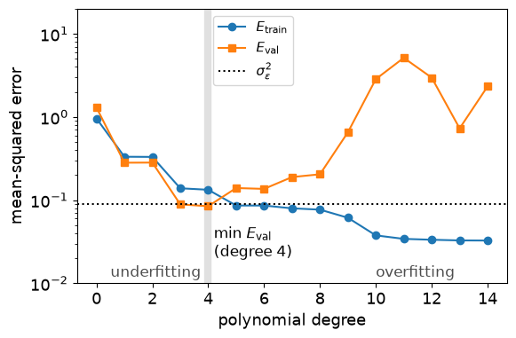
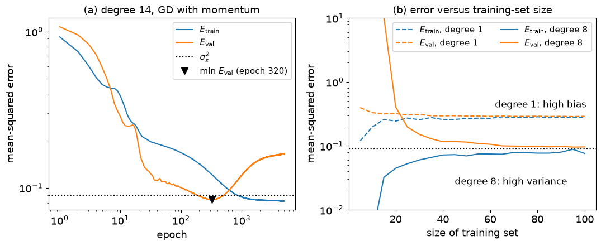
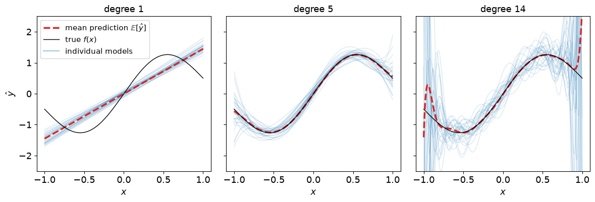
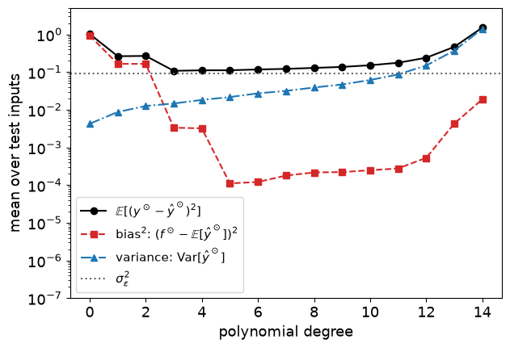
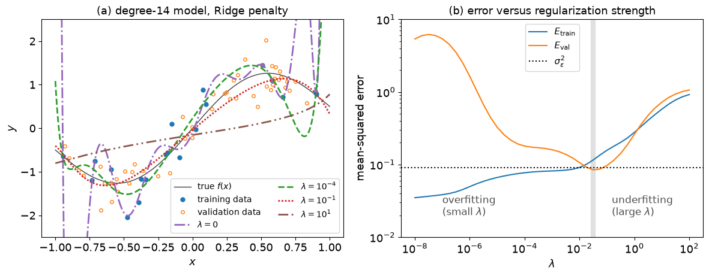

25.3. Model validation#
In this section we will encounter several concepts that are common to machine learning methods. These concepts are:
Overfitting and underfitting
Model validation and model hyperparameters
Bias-variance tradeoff
Regularization
Cross-validation
Throughout this section we use a simple running example. The data-generating process is \(f(x) = \sin(\pi x) + x/2\) for \(x \in [-1, 1]\), and observations \(\output_i = f(x_i) + \epsilon_i\) include independent, normally distributed noise with standard deviation \(\sigma_\epsilon = 0.3\). We have a training set of \(N_\mathrm{train} = 20\) observations and a validation set of \(N_\mathrm{val} = 50\) observations, and we use linear regression with polynomial models of different degrees (see Ordinary linear regression in practice). The code that produces the figures is available in hidden code cells (click on “Show code cell content”). While linear regression is used for demonstration purposes, the concepts are general and carry over to more complex models such as neural networks.
The section is based on and inspired by material in several good textbooks: in particular chapter 4 in Hands‑On Machine Learning with Scikit‑Learn and TensorFlow [Geron17] by Aurelien Geron, chapter 5 in the Python Data Science Handbook [Van16] by Jake VanderPlas and chapters 2-4 in The Elements of Statistical Learning [HTF09] by Trevor Hastie et al.
Over- and underfitting#
Overfitting and underfitting are common problems in data analysis and machine learning. Both extremes are illustrated in Fig. 25.1.

Fig. 25.1 Polynomial models of degree 1, 4 and 14 trained on the training data (filled circles). The validation data (open circles) are not used for training. The first-order polynomial model is clearly underfitting the data, while the very high degree model is overfitting it trying to reproduce variations that are clearly noise. The degree-4 model is close to the true function \(f(x)\) (thin solid line).#
The following quote from an unknown source provides a concise definition of overfitting and underfitting:
A model overfits if it fits noise as much as data and underfits if it considers variability in data to be noise while it is actually not.
A sign of overfitting is the appearance of very large fit parameters that are needed for the fine tunings of cancellations of different terms in the model. Polynomial fits of different orders to the data in Fig. 25.1 give the following root-mean-square parameter values
where \(N_p\) is the number of parameters (the degree of the polynomial plus one).
order |
\(\para_\mathrm{rms}\) |
|---|---|
1 |
1.1e+00 |
4 |
2.2e+00 |
14 |
8.6e+03 |
Note
In some cases a learning algorithm makes good predictions despite fitting to the noise in training data. This is called “benign overfitting”. See, for example, Bartlett et al., Benign Overfitting in Linear Regression. A recent explanation of this is Chatterji and Long, Foolish Crowds Support Benign Overfitting. From their abstract: “Our analysis exposes the benefit of an effect analogous to the ‘wisdom of the crowd’, except here the harm arising from fitting the noise is ameliorated by spreading it among many directions - the variance reduction arises from a foolish crowd.”
The questions are: (i) How do we detect these problems? and (ii) How can we reduce them?
Model validation#
We can detect over- and underfitting by employing a holdout set, also known as validation set. This means that we only use a fraction of the data for training the model, and save the rest for validation purposes.
This implies that we optimize the model parameters to best fit the training data, and then measure, e.g., the mean-squared error (MSE) of the model predictions for the validation set. The function that is used for measuring the performance of the model prediction is called an error function, and is here denoted \(E(\MLoutputs, \outputs)\). We stress that this function does not necessarily have to be the same as the cost function that is used for learning. The latter can incorporate other desirable features such as regularization to avoid overfitting (see below), or some domain-specific constraints. The error function, on the other hand, should focus on measuring the property of the prediction that is most important for the application at hand. Default choices for regression and classification tasks, respectively, are
Task |
Error function |
Measures |
|---|---|---|
Regression |
\(E(\MLoutput, \output) = (\MLoutput - \output)^2 \) |
Squared error |
Classification |
\(E(\MLoutput, \output) = 1 - \delta_{\MLoutput, \output}\) |
Misclassification |
where \(1 - \delta_{\MLoutput, \output} = 0\) if \(\MLoutput = \output\) (i.e. correct classification) and \(= 1\) if \(\MLoutput \neq \output\) (misclassified).
Evaluating the error function on either the training set, or the validation set, gives relevant metrics that can be used to monitor under- or overfitting
Training and validation scores
Several training and validation scores are commonly used in machine learning applications. First we have the Mean-Squared Error (MSE)
where we have \(N\) data and our model is a function of the parameter vector \(\pars\). Note that this is the metric that we are minimizing when solving the normal equation Eq. (43.12).
Furthermore, we have the mean absolute error (MAE) defined as.
And the \(R2\) score, also known as coefficient of determination is
where \(\bar{\output} = \frac{1}{N} \sum_{i=1}^N \output_i\) is the mean of the data. This metric therefore represents the proportion of variance (of \(\data\)) that has been explained by the independent variables in the model.
Fig. 25.2 shows \(E_\mathrm{train}\) and \(E_\mathrm{val}\) (using the squared error) for polynomial models of increasing degree. The training error decreases steadily with the degree, since a more flexible model can always fit the training data at least as well as a less flexible one. The validation error, on the other hand, first decreases and then increases. It has a minimum for degree 4. The growing difference between the two curves for high degrees is known as the generalization gap. It signals that the model has learned features of the training data that do not generalize to new data.

Fig. 25.2 Training and validation errors versus polynomial degree for the running example. The training error decreases monotonically, while the validation error has a minimum at an intermediate degree (shaded). The dotted line shows the variance \(\sigma_\epsilon^2\) of the noise.#
An underfit model has a high bias, which means that it gives a rather poor fit and the error function will be rather large in average. This will be true for both the training and the validation sets. In Fig. 25.2 this is the case for polynomial degrees 0–2: the training and validation errors are similar, and both are well above the noise level \(\sigma_\epsilon^2\).
An overfit model will depend sensitively on the choice of training data. A different split into training and validation sets will give very different predictions. We therefore say that the model displays a high variance. While the overfit model usually reproduces training data very well (low bias), it does not generalize well and gives a poor reproduction of validation data. The average values for the error function are therefore very different for the training and validation sets. For degrees 10 and higher in Fig. 25.2, the validation error is one to two orders of magnitude larger than the training error. Note also that the training error drops below \(\sigma_\epsilon^2\). Since no model can predict new observations better than the irreducible noise allows, a training error well below \(\sigma_\epsilon^2\) is a clear sign that the model has adapted to the noise in the training data. (The validation error, on the other hand, can dip slightly below \(\sigma_\epsilon^2\) since it is itself a noisy estimate based on only \(N_\mathrm{val} = 50\) observations.) The wiggles of the degree-14 model in Fig. 25.1 show how this happens. The concepts of bias and variance are made precise in sec:ModelValidation:bias-variance.
The polynomial degree is an example of a model hyperparameter. Hyperparameters are not determined by the training (the minimization of the cost function) but must be chosen beforehand. Other examples are the regularization strength introduced below, and the learning rate, the mini-batch size and the number of epochs of an iterative training algorithm. In order to make an informed choice for these hyperparameters we need to validate that our model provides a good fit to the training data while not becoming overfit. This important process is known as model validation. It most often involves splitting the data into two sets: the training set and the validation set.
The model is then trained on the first set of data, while its performance is monitored on the validation set (by computing your choice of performance score/error function).
Caution
Why is it important not to train and evaluate the model on the same data?
Note that the validation set is used to make choices, e.g., to select the polynomial degree with the smallest validation error. The validation error of the selected model is therefore an optimistic estimate of its performance on new data. If an unbiased estimate of the prediction error is needed, a third data set, called the test set, should be held back. The test set is used only once, to evaluate the final model after all choices have been made.
Vary the degree of the polynomial model. The left panel shows the model trained on the training data, and the right panel shows the training and validation errors versus degree.
Learning curves#
The performance of the model will depend on the amount of data that is used for training. When using iterative optimization approaches, such as gradient descent, it will also depend on the number of training iterations. In order to monitor this dependence one usually plots a learning curve.
Learning curves are plots of the model performance on both the training and the validation sets, measured by some performance metric such as the mean squared error. This measure is plotted as a function of the size of the training set, or alternatively as a function of the number of training iterations. One defines an epoch of training as an update of the model parameters where the entire batch of training data has been used exactly once. An epoch can therefore consist of multiple updates via a random traverse of all training data one by one, or split into mini-batches.
The general steps of an iterative learning algorithm, in which both errors are monitored during the training, are summarized in Algorithm 25.1.
Algorithm 25.1 (Iterative training with monitoring of training and validation errors)
Split the data into a training set \(\data_\mathrm{train}\) and a validation set \(\data_\mathrm{val}\).
Choose the hyperparameters of the model and of the training algorithm, e.g., the learning rate \(\eta\), the momentum parameter \(\gamma\), the mini-batch size \(N_\mathrm{mb}\) and the number of epochs \(N_\mathrm{epochs}\).
Initialize the model parameters \(\pars\) (for a neural network: all weights \(\weights\) and biases) and the velocity \(\boldsymbol{v} = \boldsymbol{0}\). The parameters are often initialized randomly.
For each epoch \(t = 1, \ldots, N_\mathrm{epochs}\):
Shuffle the training data and divide it into mini-batches.
Loop through the mini-batches. For each one: evaluate the gradient of the cost function for the mini-batch and update the parameters, e.g., with momentum gradient descent (see Section 44.3).
Evaluate \(E_\mathrm{train}\) and \(E_\mathrm{val}\), Eq. (25.2), with the current parameters and store the results.
Plot \(E_\mathrm{train}\) and \(E_\mathrm{val}\) versus epoch (the learning curve). Keep the parameters from the epoch with the smallest \(E_\mathrm{val}\) (known as early stopping), or change the hyperparameters and repeat the training.

Fig. 25.3 Learning curves for the running example. (a) Training and validation errors versus epoch when a degree-14 polynomial model is trained with mini-batch gradient descent with momentum (Algorithm 25.1). The triangle marks the smallest validation error. (b) Training and validation errors versus the size of the training set for a degree-1 (dashed) and a degree-8 (solid) model. The curves show the median over 50 randomly drawn training sets for each size, and the validation errors are evaluated on a large validation set.#
Several features in the learning curves shown in Fig. 25.3(a) deserve to be mentioned:
The performance on both training and validation sets is very poor in the beginning of the training.
The error on the training set then decreases steadily as more training iterations are performed.
The training error decreases quickly in the beginning, and much more slowly as the model parameters are getting closer to an optimum.
The validation error is initially very high but decreases as the model becomes better.
The validation error eventually reaches a plateau. If the training proceeds much longer than this, the model can become overfit and the validation error will eventually start increasing.
In panel (a), the validation error is smallest after 320 epochs. Stopping the training at this point gives a model that generalizes better than the fully converged one. Early stopping thereby acts as a form of regularization (see sec:ModelValidation:regularization).
For models with a high degree of complexity there will usually be a gap between the curves which implies that the model performs significantly better on the training data than on the validation set. This is a sign of high variance, see the discussion of the bias-variance tradeoff below.
The learning curves versus the size of the training set in Fig. 25.3(b) show two typical patterns:
High bias (degree 1): the training and validation errors quickly approach each other and level out at a value well above \(\sigma_\epsilon^2\). Adding more training data does not help. A more flexible model is needed.
High variance (degree 8): for small training sets there is a large gap between the very small training error and the large validation error. The gap closes slowly as the training set grows, and both errors approach \(\sigma_\epsilon^2\). Here, more training data (or regularization) does help.
The bias-variance tradeoff#
We will discuss the bias-variance tradeoff in the context of continuous predictions such as regression. However, many of the intuitions and ideas discussed here also carry over to classification tasks.
Consider observations that are related to the true data-generating process \(f\) via experimental noise. For a specific observation \(i\) we can write
where \({\epsilon}_{i}\) is an irreducible error described by a random variable. That is, even if we could find the data-generating process \(f\) we would not reproduce the data more accurately than \(\epsilon\) permits. Let us assume that these errors are i.i.d. with expectation value \(\expect{\epsilon} = 0\) and variance \(\var{\epsilon} = \sigma^2_\epsilon\)[1].
Our model \(\MLoutput(\inputs)\) is an approximation to the function \(f(\inputs)\). We will arrive at the final model after calibration (training) and there is always a risk of either under- or overfitting. Let us now consider the following scenario:
We make a prediction with our trained model at a new point \(\testinputs\). We use the shorthand notation \(\MLtestoutput \equiv {\MLoutput}(\testinputs)\).
This prediction should eventually be compared with a future observation \(\testoutput \equiv y(\testinputs) = f(\testinputs)+\epsilon^\odot \equiv f^\odot+\epsilon^\odot\)
Specifically, we are interested in the prediction error, \(\testoutput - \MLtestoutput = f^\odot+\epsilon^\odot - \MLtestoutput\), to judge the predictive power of our model.
What can we say about this prediction error? It obviously depends on the inherent noise (\(\epsilon\)), which is random, but also on the model complexity and how it was calibrated. Imagine the following repeated model calibrations:
Draw a size \(n\) sample, \(\trainingdata_n = \{(\inputs_j, y_j), j=1\ldots n\}\)
Train our model \({\MLoutput}\) using \(\trainingdata_n\).
Make the prediction at \(\testinputs\) and evaluate \(\testoutput - \MLtestoutput\)
Repeat this multiple times, using different sets of data \(\trainingdata_n\) to fit your model. What is the expectation value \(\expect{\left(\testoutput-\MLtestoutput\right)^2}\)?
Theorem 25.1 (The bias-variance tradeoff)
Consider a fixed input \(\testinputs\) and the prediction \(\MLtestoutput\) of a model that has been trained on a randomly drawn training set. The prediction is compared with a future observation \(\testoutput = f^\odot + \epsilon^\odot\), where the noise \(\epsilon^\odot\) has zero mean and variance \(\sigma^2_\epsilon\), and is independent of the training data. The bias-variance tradeoff theorem states that the expected squared prediction error (with the expectation taken over the randomness in both training sets and the noise \(\epsilon^\odot\)) can be expressed as a sum
The first of the three terms represents the square of the bias of the machine-learning model, which can be thought of as the error caused by a lack of flexibility (underfitting) that inhibits our model to fully recreate \(f\). The second term represents the variance of the model predictions, which can be thought of as its sensitivity to the choice of training data (overfitting). Finally, the last term comes from the irreducible error \(\epsilon\) that is inherent in the observations.
Proof. There are two sources of randomness: the training set, which makes the prediction \(\MLtestoutput\) a random variable, and the noise \(\epsilon^\odot\) of the future observation. The true value \(f^\odot = f(\testinputs)\) is a fixed number, and so is the expected prediction \(\expect{\MLtestoutput}\).
Split the error. Subtracting and adding \(\expect{\MLtestoutput}\), we write the prediction error as a sum of two terms
\[ \testoutput - \MLtestoutput = \underbrace{\left( f^\odot - \expect{\MLtestoutput} + \epsilon^\odot \right)}_{a} + \underbrace{\left( \expect{\MLtestoutput} - \MLtestoutput \right)}_{b}. \]Squaring and using the linearity of expectation values gives
\[ \expect{\left(\testoutput-\MLtestoutput\right)^2} = \expect{a^2} + \expect{b^2} + 2\expect{ab}. \]First term. Since \(f^\odot - \expect{\MLtestoutput}\) is a fixed number, we have
\[\begin{split}\begin{align} \expect{a^2} &= \left(f^\odot-\expect{\MLtestoutput}\right)^2 + 2\left(f^\odot-\expect{\MLtestoutput}\right)\expect{\epsilon^\odot} + \expect{(\epsilon^\odot)^2} \\ &= \left(f^\odot-\expect{\MLtestoutput}\right)^2 + \sigma^2_\epsilon, \end{align}\end{split}\]where we used \(\expect{\epsilon^\odot} = 0\), which also implies that \(\expect{(\epsilon^\odot)^2} = \var{\epsilon^\odot} = \sigma^2_\epsilon\). This term is the squared bias plus the irreducible error.
Second term. By the definition of the variance,
\[ \expect{b^2} = \expect{\left(\MLtestoutput - \expect{\MLtestoutput}\right)^2} = \var{\MLtestoutput}. \]Mixing term. Splitting \(a\) into its fixed and random parts gives
\[ \expect{ab} = \left(f^\odot-\expect{\MLtestoutput}\right) \expect{\expect{\MLtestoutput} - \MLtestoutput} + \expect{\epsilon^\odot \left(\expect{\MLtestoutput} - \MLtestoutput\right)}. \]The first part vanishes since \(\expect{\expect{\MLtestoutput} - \MLtestoutput} = \expect{\MLtestoutput} - \expect{\MLtestoutput} = 0\). The second part vanishes because the noise \(\epsilon^\odot\) of the future observation is independent of the training data, and therefore of \(\MLtestoutput\). The expectation value then factorizes into \(\expect{\epsilon^\odot} \expect{\expect{\MLtestoutput} - \MLtestoutput} = 0\).
Adding the three terms gives Eq. (25.7).
The tradeoff between bias and variance is illustrated in Fig. 25.4 and Fig. 25.5. Note the similarity between the expected prediction error in Fig. 25.5 and the validation error in Fig. 25.2. The latter is a noisy estimate of the former, based on a single training set and a single validation set.

Fig. 25.4 The bias-variance tradeoff illustrated for polynomial models of low (degree 1), intermediate (degree 5) and high (degree 14) complexity. For each degree we have trained the model on 200 different training sets, each with \(N_\mathrm{train} = 20\) observations. Thin blue lines show 30 of these models and the thick dashed line shows the mean prediction. The degree-1 models are similar to each other but their mean deviates from the true function \(f(x)\) (thin black line). These models have a large bias and small variance. The degree-14 models have a mean close to \(f(x)\) but vary a lot between training sets. They have a small bias and large variance.#

Fig. 25.5 The three terms of the bias-variance decomposition, Eq. (25.7), versus polynomial degree. The squared bias and the variance are estimated from the 200 training sets of Fig. 25.4 and averaged over 19 test inputs \(\testinputs \in [-0.9, 0.9]\). The expected squared prediction error is their sum plus the irreducible error \(\sigma_\epsilon^2\).#
Remarks on bias and variance#
The bias-variance tradeoff summarizes the fundamental tension in machine learning, particularly supervised learning, between the complexity of a model and the amount of training data needed to train it. Since data is often limited, in practice it is often useful to use a less-complex model with higher bias, that is a model whose asymptotic performance is worse than another model because it is easier to train and less sensitive to sampling noise arising from having a finite-sized training dataset (smaller variance). In general, more flexible statistical methods have higher variance.
The above equations tell us that in order to minimize the expected validation error, we need to select a statistical learning method that simultaneously achieves low variance and low bias. Note that variance is inherently a nonnegative quantity, and squared bias is also nonnegative. Hence, we see that the prediction error can never lie below \(\var{\epsilon} \equiv \sigma^2_\epsilon\), the irreducible error.
Regularization: Ridge and Lasso#
Let us now consider an approach to reduce the risk of overfitting. Assuming that overfitting is characterized by large fit parameters, we can attempt to avoid this scenario by regularizing the model parameters. We will introduce two kinds of regularization: Ridge and Lasso. So called elastic net regularization is also used in the literature and basically corresponds to a linear combination of the Ridge and Lasso penalty functions.
Let us remind ourselves about the expression for the standard Mean Squared Error (MSE) which we used to define our cost function and the equations for the ordinary least squares (OLS) method. That is our optimization problem is
where \(N_d\) is the number of training data.
By minimizing the above equation with respect to the parameters \(\pars\) we could then obtain an analytical expression for the parameters \(\pars\). Let us add a penalty term, with a regularization parameter \(\lambda\), to define a new cost function
(the normalization factor \(1/N_d\) of the MSE has been absorbed into \(\lambda\)). This leads to the Ridge regression minimization problem where we constrain the parameters via \(\vert\vert \pars\vert\vert_2^2\) and the optimization equation becomes
Alternatively, Lasso regularization can be performed by defining
Here we have defined the norm-1 as
Lasso stands for least absolute shrinkage and selection operator. In contrast to Ridge regression, which makes all parameters smaller but rarely exactly zero, Lasso tends to set some parameters exactly to zero. It therefore also performs a selection of the most relevant basis functions (features).
The effect of Ridge regularization on the running example is shown in Fig. 25.6. Without regularization (\(\lambda = 0\)) the degree-14 model is overfitting, while a very large \(\lambda\) forces all parameters towards zero and the model underfits. The training error increases monotonically with \(\lambda\), while the validation error has a minimum at an intermediate value. The regularization strength \(\lambda\) is therefore a hyperparameter that should be determined using a validation set, or with cross-validation as described in sec:ModelValidation:cross-validation.

Fig. 25.6 Ridge regularization of a degree-14 polynomial model of the running example. (a) The model trained with different penalty parameters \(\lambda\). (b) Training and validation errors versus \(\lambda\). The shaded band marks the \(\lambda\) with the smallest validation error.#
Vary the Ridge regularization strength λ of a degree-14 polynomial model. The left panel shows the trained model, and the right panel shows the training and validation errors versus λ.
More on Ridge Regression#
Using the matrix-vector expression for Ridge regression,
by taking the derivatives with respect to \(\pars\) we obtain then a slightly modified matrix inversion problem which for finite values of \(\lambda\) does not suffer from singularity problems. We obtain
with \(\boldsymbol{I}\) being a \(N_p\times N_p\) identity matrix
We see that Ridge regression is nothing but the standard OLS with a modified diagonal term added to \(\dmat^T\dmat\). The consequences, in particular for our discussion of the bias-variance are rather interesting. Increasing \(\lambda\) reduces the variance of the model predictions at the price of an increased bias, as seen in Fig. 25.6. Ridge regression can also be formulated as a constraint on the model parameters
with \(t\) a finite positive number. Minimizing \(\vert\vert \data-\dmat\pars\vert\vert_2^2\) subject to this constraint is equivalent to minimizing \(C_{\lambda,2}(\pars)\), with a one-to-one correspondence between \(t\) and \(\lambda\) (as follows from the method of Lagrange multipliers). A larger \(\lambda\) corresponds to a smaller \(t\).
For more discussions of Ridge and Lasso regression, see: Wessel van Wieringen’s [vW15] article or Mehta et al’s [MBW+19] article.
Cross-validation#
Cross-validation is a strategy to find model hyperparameters that yield a model with good prediction performance. A common practice is to hold back some subset of the data from the training of the model and then use this holdout set to check the model performance.
One of these two data sets, called the training set, plays the role of original data on which the model is built. The second of these data sets, called the validation set, plays the role of the novel data and is used to evaluate the prediction performance (often operationalized as the log-likelihood or the prediction error: MSE or R2 score) of the model built on the training data set. This procedure (model building and prediction evaluation on training and validation set, respectively) is done for a collection of possible choices for the hyperparameters. The hyperparameter value that yields the model with the best prediction performance is to be preferred.
The validation set approach is conceptually simple and is easy to implement. But it has two potential drawbacks:
The validation estimate of the test error rate can be highly variable, depending on precisely which observations are included in the training set and which observations are included in the validation set. There might be data points that are critical for training the model, and the performance metric will be very bad if those happen to be excluded from the training set.
In the validation approach, only a subset of the observations, those that are included in the training set rather than in the validation set are used to fit the model. Since statistical methods tend to perform worse when trained on fewer observations, this suggests that the validation set error rate may tend to overestimate the test error rate for the model fit on the entire data set.
To reduce the sensitivity on a particular data split, one can perform several different splits. For each split the model is fit using the training data and evaluated on the corresponding validation set. The hyperparameter that performs best on average (in some sense) is then selected.
To avoid unbalanced influence of important training samples one can use \(K\)-fold cross-validation to structure the data splitting. The \(N_d\) samples are divided into \(K\) more or less equally sized, exhaustive and mutually exclusive subsets (folds). At each fold one of these subsets plays the role of the validation set while the union of the remaining subsets constitutes the training set. Such a splitting warrants a balanced representation of each sample in both training and validation set over the splits. Still the division into the \(K\) subsets involves a degree of randomness. This may be fully excluded when choosing \(K=N_d\). This particular case is referred to as leave-one-out cross-validation (LOOCV). Note that any test set should be held back before the cross-validation is performed.
Algorithm 25.2 (\(K\)-fold cross-validation)
Define a range of interest for the model hyperparameter(s) \(\boldsymbol{\lambda}\) and create a set \(\{ \boldsymbol{\lambda}_m \}_{m=1}^M\) that spans this range. Here, \(\boldsymbol{\lambda}\) denotes any hyperparameter(s), e.g., the polynomial degree or the Ridge regularization strength.
Divide the data set \(\data\) (with \(N_d\) data, not including any test set) into \(K\) exhaustive and mutually exclusive subsets \(\data_{k} \subset \data\) for \(k=1,\ldots,K\), with \(\data_{k} \cap \data_{l} = \emptyset\) for \(k \neq l\).
For \(m \in \{1, \ldots, M\}\):
For \(k \in \{1, \ldots, K\}\):
Use \(\data_{k}\) as the validation set and all other data \(\data_{-k} = \data \setminus \data_k\) as the training set.
Train the model with hyperparameter(s) \(\boldsymbol{\lambda}_m\) using the training set \(\data_{-k}\), which will give a best fit \(\pars^*_{-k}(\boldsymbol{\lambda}_m)\).
Evaluate the error function for all data in the validation set \(\data_k\).
Average the errors over all folds. This is known as the cross-validated error
\[ \mathrm{CV}_K(\boldsymbol{\lambda}_m) = \frac{1}{N_d} \sum_{k=1}^{K} \sum_{(\inputs_i, \output_i) \in \data_k} E\left( \MLoutput(\inputs_i; \pars^*_{-k}(\boldsymbol{\lambda}_m)), \output_i \right), \]where \(\MLoutput(\inputs_i; \pars^*_{-k}(\boldsymbol{\lambda}_m))\) is the prediction of the model trained without fold \(k\). Each datum is used for validation exactly once.
The hyperparameter(s) that minimizes the cross-validated error is the best choice.
\[ \boldsymbol{\lambda}^* = \underset{\boldsymbol{\lambda}_m}{\operatorname{argmin}} \mathrm{CV}_K(\boldsymbol{\lambda}_m). \]Fix \(\boldsymbol{\lambda} = \boldsymbol{\lambda}^*\) and train the model on all data \(\data\).
Exercises#
Exercise 25.1 (\(k=1\) NN training error)
What is \(E_\mathrm{train}\) (25.2) for binary classification using \(k\)NN with \(k=1\)?
Exercise 25.2 (\(k\)NN model complexity)
Draw a simple figure to illustrate the under-and overfitting regions of a \(k\)NN model. With model complexity on the \(x\)-axis, where would you put the extremes \(k=1\) and \(k=N\) (with \(N\) being the number of training data)? In other words, what would be the effective number of parameters in this model?
Exercise 25.3 (Study of model bias and variance)
Perform your own study of the bias-variance tradeoff by revisiting the linear regression problem in Ordinary linear regression in practice.
Create one validation set and ten different training sets using different random number generators (
rngargument) in thedata_generating_process_measurement()function.Train linear regression models of different polynomial degrees for each training set. Evaluate both the training error and the validation error for each model.
Plot all ten degree-0 models in a single figure (using the same color for each line, but make them slightly transparent such that they don’t block the view) together with the validation data and with the true, underlying model. Plot also the ten degree-5 models in the same figure (in a different color). Now try to understand why the former family can be described as having large bias but small variance, whereas the latter has large variance.
Connect these findings to the concept of predictive power.
Exercise 25.4 (Implement \(K\)-fold cross validation)
Use either the linear regression example, or the binary classification one, to implement \(K\)-fold cross validation. Try to use the results to determine an optimal degree of the polynomial for linear regression, or the choice of \(k\) for the \(k\)NN classifier.
Exercise 25.5 (Large training error)
Explain why \(E_\mathrm{train}\) is a poor metric for estimating the prediction error.
Consider the situation when \(E_\mathrm{train}\) is larger than the prediction error that you are aiming for. Explain why it then becomes a waste of time to implement cross validation or other techniques to estimate the actual prediction error.
What could help to reduce the training error?
Solutions to exercises#
Solution to Exercise 25.1 (\(k=1\) NN training error)
\(E_\mathrm{train} = 0\) for \(k\)NN models with \(k=1\).
Solution to Exercise 25.2 (\(k\)NN model complexity)
The effective number of parameters in a \(k\)NN model goes something like \(N/k\). Think about how many effective parameters the training data corresponds to in the extreme situations with \(k=1\) and \(k=N\). In between, you can imagine non-overlapping regions of \(k\) sized clusters.
In effect, this implies that the \(k=1\) model is the one with the largest number of effective parameters and hence the most complex one (explaining the overfitting), whereas the \(k=N\) model has effectively a single parameter and will underfit.
Solution to Exercise 25.3 (Study of model bias and variance)
You should see small variations between the degree-0 models since they just capture the means of the respective training sets. However, it also implies that they in average reproduce both training and validation data poorly.
The higher degree models will show much larger variations (since they will be overfitting to the different sets of training data). They will all perform well on their respective training set, but poorly on the validation set.
Solution to Exercise 25.4 (Implement \(K\)-fold cross validation)
Note you are interested in the cross-validated error \(\mathrm{CV}_K(\lambda)\) (see Algorithm 25.2), where the hyperparameter \(\lambda\) is the polynomial degree for the linear regression example, or the number of neighbors \(k\) for the \(k\)NN classifier.
Solution to Exercise 25.5 (Large training error)
\(E_\mathrm{train}\) will always decrease with increasing model complexity as it is tuned to the data (and higher model complexity implies more model flexibility).
The error on new data, \(E_\mathrm{new}\), is in general larger than \(E_\mathrm{train}\). This is the generalization gap. So it is better to invest your time in improving the model, or collecting more data, before actually attempting to estimate the prediction error.
See the above answer.